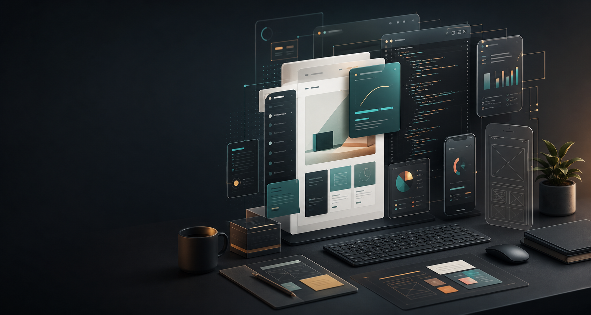

Epic Little Treasures boutique shop.
A vintage cottage storefront with product data, responsive catalog cards, checkout links, contact flow, and owner-friendly update path.
View live site
Custom websites, software, visualization
Fast, modern, physics-inspired web experiences built with direct developer communication, clean UI, and room to grow beyond a template.
Proof of direction
The strongest Aphelion projects are not generic template pages. They are polished client sites, interactive tools, dashboards, and visual systems that need a developer's judgment.
A vintage cottage storefront with product data, responsive catalog cards, checkout links, contact flow, and owner-friendly update path.
View live sitePhysics and math-focused interface work that demonstrates custom plotting, user interaction, numerical thinking, and non-template UI.
The natural next step for businesses that need a website plus the operational layer behind it: forms, analytics, payments, and data.
Positioning
Template platforms are useful for basic pages. Aphelion is for clients who want direct access to a developer, cleaner visual judgment, custom interaction, and software thinking when the project grows past a template.
What you can hire for
Pricing and scope are tied to what the site or app should make easier: trust, leads, sales, data, automation, or a working product interface.
Lean launch sites with responsive design, contact flow, SEO basics, and deployment.
GrowthService pages, forms, booking paths, pricing structure, analytics, and content strategy.
SoftwareWhen the value lives behind the page, Aphelion can engineer the actual system.
Engineering signal
The identity is scientific and orbital, but the business promise is practical: clean builds, understandable scope, responsive support, and technical depth when a project needs more than a page.
Human presence
Engineering physics background, programming, scientific computing, visualization, and modern frontend work.
View GitHubWhy that matters
Aphelion should feel personal because the work is personal. You get direct communication, clearer tradeoffs, and someone who can explain both the design choices and the technical decisions behind the build.
How it works
Clear steps help smaller clients know what is happening, what they need to provide, and when the project is ready to launch.
Define audience, goals, content, budget, and the smallest useful launch.
Set visual direction, page structure, and the core flow before build.
Build responsive pages, forms, integrations, app logic, or dashboards.
Refine copy, spacing, mobile behavior, details, and launch readiness.
Deploy, test, document the handoff, and support next improvements.
Price guide
Starter work stays approachable. Custom applications, dashboards, interactive visualizers, and backend workflows are priced for engineering depth.
A focused portfolio or small business site with launch essentials.
More pages, stronger positioning, conversion paths, SEO, and analytics.
Apps, dashboards, portals, automations, visualizers, and backend logic.
Next step
If you only need a clean page, say that. If you need software, describe what the system should make easier and what would make the project worth it.
Send a project note